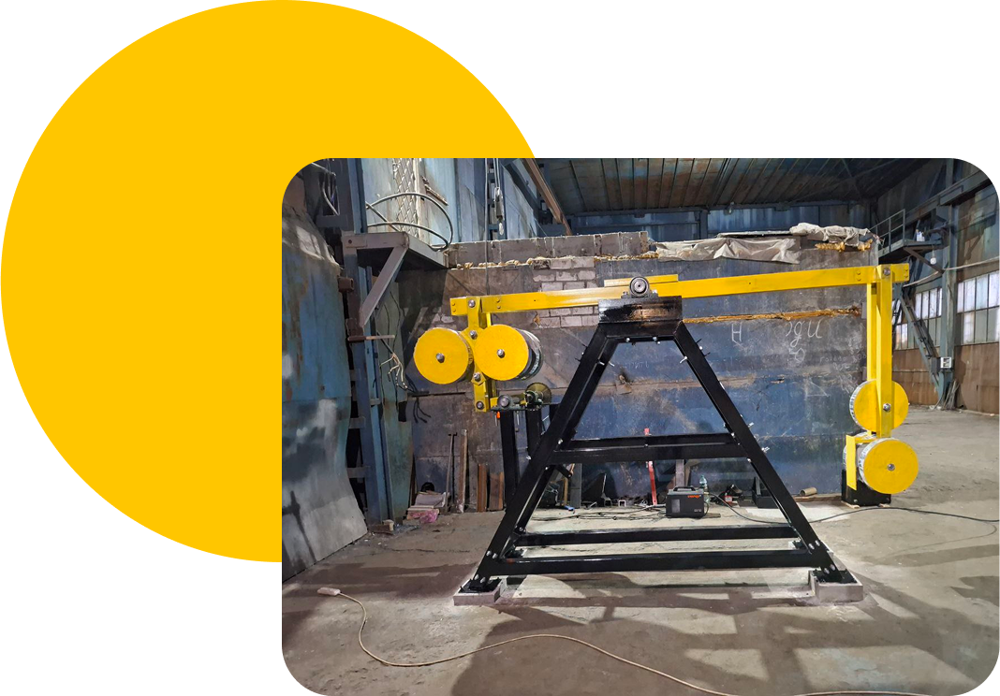

-
Маятник
Дугінця -
Запатентована машина перетворює
коливання маятника в електроенергію. -
Тепер для вас 1 квт=1гривня
-
Ми допоможемо вам заробляти, а не тільки
економити -
Інвестори від 4 000 грн до 40 000 000 грн
ласкаво просимо!
Перетворення можливо завдяки закону збереження енергії. Тому що вічних двигунів не існує і не може існувати. Вкладена енергія = енергія на виході. В нашому випадку Вкладена енергія = енергія підштовхування маятника (кожен період 24/7) + сила тяжіння. Можна ще розписувати ці сили на складові, але важливо, що Маятник Дугінця працює і виробляє електроенергію дуже дешево. Собівартість виробленої електроенергії менше однієї гривні за один квт. Ця машина як і описано фізикою має великий виграш в силі і великий програш у відстані. Маємо велику амплітуду коливань маятника і дуже малий хід вихідного механізму, маючи багато сили.
-
01
Спочатку енергія вкладається в Маятник Дугінця за допомогою підштовхування кожний період коливань. Коливання маятника змушують інший край коромисла підійматись вверх кожен раз, коли маятник проходить нижню точку своїх коливань. Завдяки особливості конструкції Маятник, який не зв'язаний жорстко з іншими частинами машини, потребує одного і того ж зусилля для підтримування коливань.
-
02
Якщо порівняти цю систему з ,наприклад , зубчатою передачею або ланцюговою, то в них при блокуванні однієї частини механізму блокується все. Тому маятник в цій системі не реагує на можливе блокування будь якої частини всієї машини. Він буде продовжувати свої коливання поки його підштовхують, виробляючи або не виробляючи електроенергію. Тому і зусилля на підтримку коливань одне і теж, з навантаженням чи без.
-
03
Маятник має свій ліміт сили, яку він може передати машині для скоєння роботи. Якщо навантажити другу частину коромисла, на якому з однієї сторони маятник ,а з іншої противага, непід'йомною вагою для конкретного маятника, то робота не буде вироблятись, а маятник буде коливатись з тією ж самою амплітудою та з тим самим зусиллям, якби він підіймав вантаж с другої сторони коромисла.
Маятник змушує коливатись противагу, яка в свою чергу змушує підіймати і опускати модулі з магнітами в лінійному генераторі та виробляти електроенергію. Лінійний генератор включає в себе закріплений статор( залізо, з намотаною на нього мідною проволокою) та рухаючийся слайдер на колесах з магнітами. Магніти, рухаючись вдовж статора виробляють електроенергію. Для необхідної потужності вихідної електроенергії додається потрібна кількість модулів, а також розраховується необхідна вага маятника та противаги, та довжина коромисла.
Як за допомогою маятника не просто економити на рахунках за електроенергію, а ще і заробляти?
Все доставимо та підключимо. Також допоможемо з виводом коштів від майнінгу на вашу карту.
Додатково придбати обладнання для майнінгу криптовалют і заробляти на майнінгу, використовуючи зайву електроенергію 24/7.
УЯВІТЬ, як Маятник Дугінця буде не тільки економити вам від 3 до 10 гривень на одному кіловаті, а ще й заробляти вам гроші за допомогою майнінгу біткоіна. Вам не потрібно розумітись на майнінгу. Ми встановимо все необхідне обладнання та підключимо. Коли електроенергія ,видобута за допомогою маятника, буде не потрібна на вашому виробництві після закінчення робочого дня або на потреби дому, вона буде використовуватись для вашого заробітку на майнінгу криптовалют до початку наступного робочого дня. І так 24 години на добу. Зароблені гроші будуть виводитись на вашу банківську карту. Щоб все було так просто для вас, нам довелося створити свій науково дослідницький інститут з виробничим цехом ,інвестувати більше $200000 та 6 років наполегливої праці, провести багато дуже дорогих випробувань, витратити купу нервів, знайти потрібних фахівців, яких майже немає, навчати своїх працівників і навчатись самим , вірити в успіх навіть тоді, коли вже майже не було надії на фінансування та на знайомство з потрібними фахівцями. В цей продукт вкладені віра, гроші, праця, роки життя від першої думки у 2011 році до виготовлення продукту у 2025 році. Тепер ви розумієте весь пройдений шлях. Дякуємо.